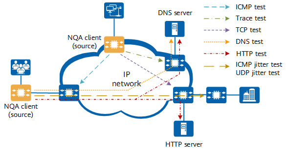

IP networks carry various network services. To learn about the operating status of an IP network in real time, you can check the network status and performance indicators using different types of NQA tests. On an IP network, the following types of NQA tests can be performed:

Test Type |
Application Scenario |
|---|---|
ICMP test |
This test can be used to determine the network operating status. It improves on the ping operation, which must be performed manually and can test only one device at a time. |
Trace test |
This test can be used to determine whether the communication between two network nodes is smooth. In addition, a trace test can assist in diagnosing and locating a fault on the path. |
TCP test |
This test can be used when two communication parties on the network need to set up TCP connections and the TCP connection setup time needs to be checked. |
DNS test |
This test can be used when the time for a DNS server to resolve domain names needs to be checked. |
HTTP test |
This test can be used to check whether a network node can set up a connection with a specified HTTP server and measure the time taken to set up such a connection. |
ICMP jitter test |
This test can be used when the network has stability-sensitive services. |
UDP jitter test |
This test can be used when an ICMP jitter test cannot be used due to the ICMP reply function being disabled on network devices for security purposes. In addition, the UDP jitter test can also be used to simulate voice traffic. |